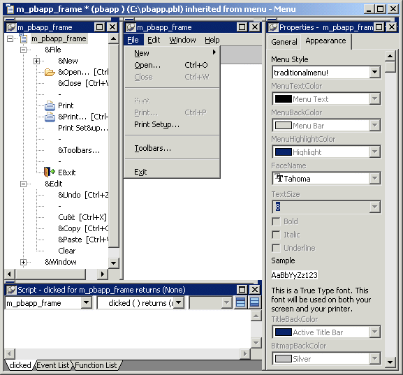
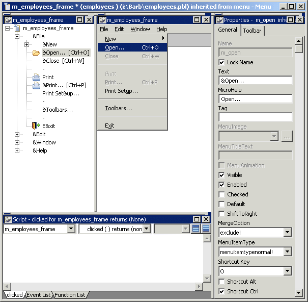
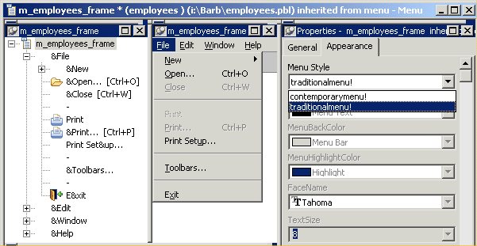

The Menu painter has several views where you can specify menu items and how they look and behave. For general information about views, how you use them, and how they are related, see "Views in painters that edit objects".
In addition to customizing the style of a menu in the Menu painter, you can also customize the style of a toolbar associated with a menu. For information, see "Providing toolbars ".
You use two views to specify menu items that display in the menu bar and under menu bar items:
The Tree Menu view and the WYSIWYG Menu view are equivalent. You can use either view to insert new menu items on the menu bar or on drop-down or cascading menus, or to modify existing menu items. The menus in both views change when you make a change in either view.
You specify menu properties in two views:
This Menu painter layout is for the top level menu object, m_pbapp_frame. The Tree Menu view is in the top left and the WYSIWYG Menu view is in the top middle. The General and Appearance tab pages display in the Properties view on the right. For more information about these properties, see "Setting menu style properties for contemporary menus".

This Menu painter layout is for a menu item under the top level, in this case the Open menu item. The Tree Menu view is in the top left and the WYSIWYG Menu view is in the top middle. The General and Toolbar tab pages display in the Properties view on the right. For more information about these properties, see "Setting General properties for menu items".

A menu can have a contemporary or traditional style.
| Menu style | Description |
|---|---|
| Contemporary | A 3D-style menu similar to Microsoft Office 2003 and Visual Studio 2005 menus |
| Traditional | Window default menu style which has a flat appearance |
Menus that you import or migrate from earlier versions of PowerBuilder have the traditional style, and new menus use the traditional menu style by default. The new contemporary menu style has a three-dimensional menu appearance that can include images and menu title bands. With a contemporary menu, you can set the MenuAnimation, MenuImage, and MenuTitleText at runtime using scripts.
You select a menu style on the Appearance tab of the Properties view for the top-level menu object in the Menu painter. You must select the top-level menu object in the Tree Menu view of the Menu painter to display its Properties view.
 To specify the menu style:
To specify the menu style:
Select the top-level menu object.
In the Appearance tab page, select the menu style you want, contemporarymenu! or traditionalmenu!

If you select contemporarymenu! in the Menu Style drop-down list, you can customize the display properties for that style and have them apply to all menu items in the current menu. If you select traditionalmenu! the rest of the menu style properties are grayed.
Contemporary menus can include images. You can use icons, bitmaps, GIF files, and JPEG files for both contemporary menus and traditional and contemporary toolbars.
All stock icons have a transparent background. Other icon and GIF files with transparent backgrounds are always displayed with a transparent background. If you want a bitmap to display with a transparent background, the bitmap must use button face as its background color. This applies whatever the background color of the menu or toolbar is set to. There is currently no property that allows you to specify that an image has a transparent background.
With the contemporary menu style and toolbar style, when an icon file includes several images, PowerBuilder uses the following image selection rules: